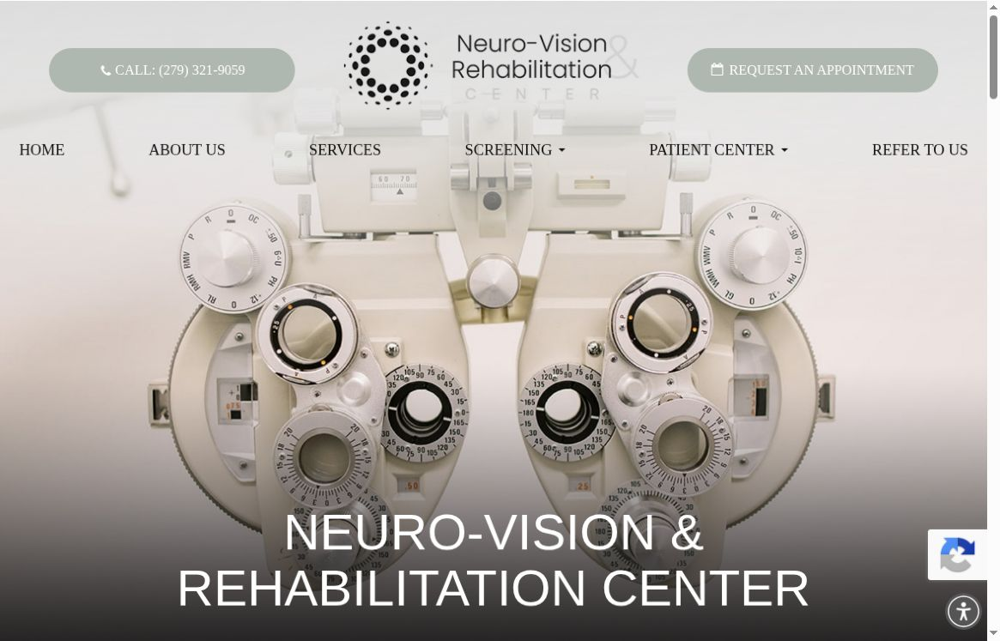
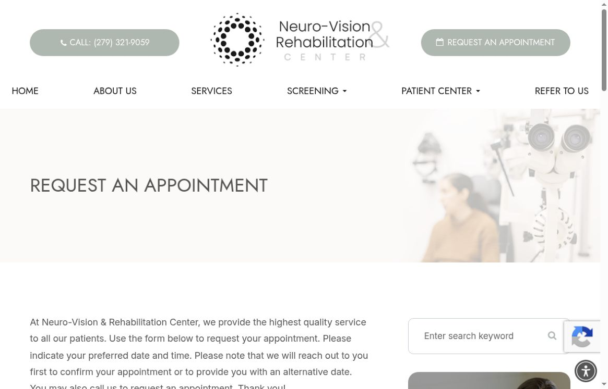

A DISTINCT SPECIALTY
Vision therapy, brain injury evaluations and sports vision have dedicated service routes.

 PREPARED FOR / Neuro-VisionLET’S TALK ↗
PREPARED FOR / Neuro-VisionLET’S TALK ↗We’re a local Sacramento team helping local businesses get more leads, inquiries and bookings. We run local Meta ads on Facebook and Instagram, create the content for those ads, and improve local SEO: how people find you through your Google Business Profile, website and helpful blog content.
SEE WHAT WE FOUND ↘

REAL BUSINESS IMAGERY. A TAILORED VESSEL PROPOSAL.
We went through your website, Google profile and public listings as a new patient trying to understand the practice, and as an owner deciding what marketing work would be useful. This review shows what builds confidence, where someone could get confused, and the practical fixes we could help make.
Your site makes the specialty and the clinician behind it visible, and your appointment page already explains that the team will confirm requests. The Google profile also shows the current address. Those are useful foundations for making a first enquiry feel less uncertain.
Vision therapy, brain injury evaluations and sports vision have dedicated service routes.
The team page introduces clinicians, therapists and patient-care coordinators.
The Folsom address, phone and appointment-only hours are easy to find.
What is working: official website, reviewed October 20, 2026.
A specialist practice should be easy to find, easy to understand and clear about what happens after an enquiry. These are possible points of friction, not measured lost customers.
The official website and Google profile show 1180 Iron Point Road, Suite 240. Birdeye and LinkCentre still list 1130 Iron Point Road, Suite 138.
A new visitor who finds a mismatched listing could plan the wrong arrival or spend extra time checking which address is correct.
Confirm the current details with your team, then request corrections on the mismatched listings. Keep the name, phone, suite, hours and appointment link consistent across the profiles people are likely to find.
The form asks for a preferred date and time, then says staff will confirm or suggest an alternative. It is a request, not a reserved appointment.
Someone may still wonder when they will hear back or what to do if their preferred time is unavailable.
Keep the request process, but add a response window approved by your team, a plain explanation of what happens next and a clear confirmation message after submission.
The homepage has text, service images and reviews. We did not find a video element or YouTube/Vimeo player on that page.
For an unfamiliar specialty, a short explanation from a clinician can help someone understand what to ask and feel more comfortable making an enquiry.
Film short, approved clinician explanations and staff demonstrations. Add captions, written versions and links to the relevant service pages. Use only information your clinical team approves.
The homepage service cards show service names, but the nearby links literally contain ‘[LINK]’ without a more descriptive accessible label.
Someone navigating a list of links with a screen reader may not know which service each one opens.
Name each link for its destination, such as ‘Explore vision therapy’. Test the cards with keyboard and screen-reader navigation, as well as on a phone.

Captured October 20, 2026. The form explains that the practice will confirm the request or offer another date.
Fresh mobile lab run: Performance 61/100 and LCP 9.4s. The latest 28-day origin field assessment also failed Core Web Vitals, with LCP 3.8s; INP was unavailable. Review files that delay the first view, image delivery and caching before adding video. Lighthouse 13.5, emulated Moto G Power, Slow 4G, October 20, 2026; one lab run.
Google Maps showed 4.9 stars / 33 reviews and 1180 Iron Point Road, Suite 240. Birdeye and LinkCentre list a different 1130 / Suite 138 address. No individual patient story is reused here.
A Google owner post dated October 8, 2026 links to the sports-vision article. The Instagram handle tested returned “Profile isn’t available”; current social ownership and post dates need confirmation. No inactivity claim is made.
The US active-ad keyword search showed unrelated practices, including a Pennsylvania business. It did not establish this practice’s campaign status. A GA4 script was observed on the homepage.
The appointment request explains staff confirmation or an alternative date. No form was submitted.
Google AI Mode named Neuro-Vision for “vision therapy Folsom” and displayed the current address. The homepage title still leads with general optometry; refine that wording around the verified specialty. One answer sample does not establish overall AI visibility.
We reviewed public pages only; private account data and business outcomes were not available.
A few terms used in the checks: Google Business Profile is your listing in Maps and local search. SEO means making the business easier to find in search. A lab speed test simulates one phone visit; field data summarizes real visits. LCP measures when the main content appears, TBT measures delays before a page responds, and CLS measures content jumping around. JSON-LD is extra website code that describes the business to search tools. GTM (Google Tag Manager) manages website tracking tags. Core Web Vitals are Google’s checks for loading, responsiveness and visual stability. Origin data covers the whole website; URL data covers the tested page. INP measures how quickly the page responds after a tap or click. GA4 means Google Analytics 4, a tool for measuring website visits and actions.
Here is the work we could take off your team’s plate, starting with the fixes above.
Make the specialist services easier to find in search, name the service links clearly and explain the appointment-request process.
Plan interview prompts, shoot approved staff demonstrations and edit accessible short-form videos.
Review privacy and consent before any analytics changes. Report overall enquiry activity without sending symptoms or patient information to ad platforms.
Three starting concepts for an approved pilot. Open a card to see the shot plan.
Dr. Nathu explains the evaluation process and what to bring. Show the room and staff, without records or identifiable patients.
A plain-language explanation approved by the clinical team. Use staff demonstrations and equipment close-ups; avoid outcome promises.
Meet a patient-care coordinator and explain how requests are reviewed, confirmed and prepared for the first visit.
Agree on the priority. Make the first improvement. Check what changed before adding more.
Choose the first clinical questions, approve language and establish filming, privacy and review boundaries.
Refine search copy and appointment expectations. Film the first clinician education pieces with captions and transcripts.
Review patient questions and overall enquiry activity. Improve the content and agree on a practical ongoing schedule.
We would agree on scope, timing, access and approvals with your team before starting.
Two client examples. A public work sample. A few reasons to take a closer look.
5.0 / 18 Google reviews ↗
As displayed on Vessel’s website, October 20, 2026.
 Vessel client / published creative work
Vessel client / published creative work